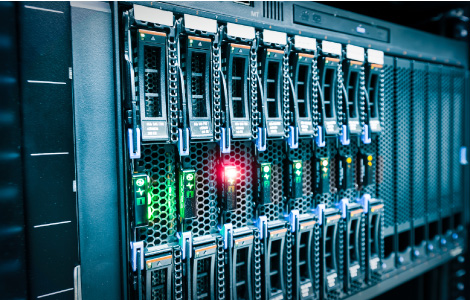

日々システムが正常に動作しているかを確認し、適切にサービス提供ができているかどうか管理することを指します。その際、ユーザーがシ
ステムを正しく使えているかチェックも行います。
例えばアクセスするのに時間がかかり、ユーザーに過度なストレスを与えてしまったり、接続自体ができなくなり、大損害を引き起こしてし
まったり等によるトラブルを未然に防ぎます。
お客さまのシステム運用作業を、当社エンジニア、オペレーターが引
き受け・対応いたします。
お客さまは本来の業務に専念することができるため、業務効率を上げ
ることができ、また業務増に伴う人員増強などによる経費等を抑える
ことができます。
保守とはシステムの一部に修正や変更を加えたり、新たな機能改善を施したりすることを指します。
運用との違いは、システムの変更作業が発生することです。保守が必要になるシーンは、バグやネットワーク障害などのトラブルが発生して
急遽対処したい場合や、データの増加等により処理スピードが低下した場合などがあります。

システムトラブルや担当者が辞めてしまったなど。サーバー環境構築
や、複数サーバーの仮想化や移行などを行います。
障害が起きてからの復旧には時間も高額な費用も発生します。保守は
保険のようなものです。突発的なトラブルや日常的な不安を取り除き、
快適なシステム環境を保ちます。